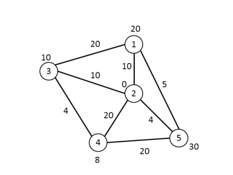

請輸入時間與預算限制，並選擇「出發起點」，系統將為您尋找遊玩最多設施的完美循環路線。

請點擊上方的「出發按鈕」來產生路線規劃。
| 設施 (節點) | 遊玩時間 | 入場費 |
|---|---|---|
| 1 | 20 分鐘 | 100 元 |
| 2 (廣場) | 0 分鐘 | 0 元 |
| 3 | 10 分鐘 | 50 元 |
| 4 | 8 分鐘 | 40 元 |
| 5 | 30 分鐘 | 150 元 |
| 路徑 (邊) | 移動時間 | 接駁費 |
|---|---|---|
| 1 ↔ 2 | 10 分鐘 | 0 元 (步行) |
| 1 ↔ 3 | 20 分鐘 | 10 元 (公車) |
| 1 ↔ 5 | 5 分鐘 | 0 元 (步行) |
| 2 ↔ 3 | 10 分鐘 | 0 元 (步行) |
| 2 ↔ 4 | 20 分鐘 | 10 元 (公車) |
| 2 ↔ 5 | 4 分鐘 | 0 元 (步行) |
| 3 ↔ 4 | 4 分鐘 | 0 元 (步行) |
| 4 ↔ 5 | 20 分鐘 | 10 元 (公車) |
註：移動時間 20 分鐘之較遠路徑，提供遊園接駁車（費用 10 元）。節點 2 為不收費且不耗時之中央廣場。